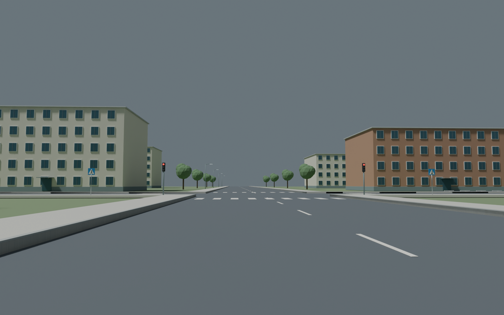
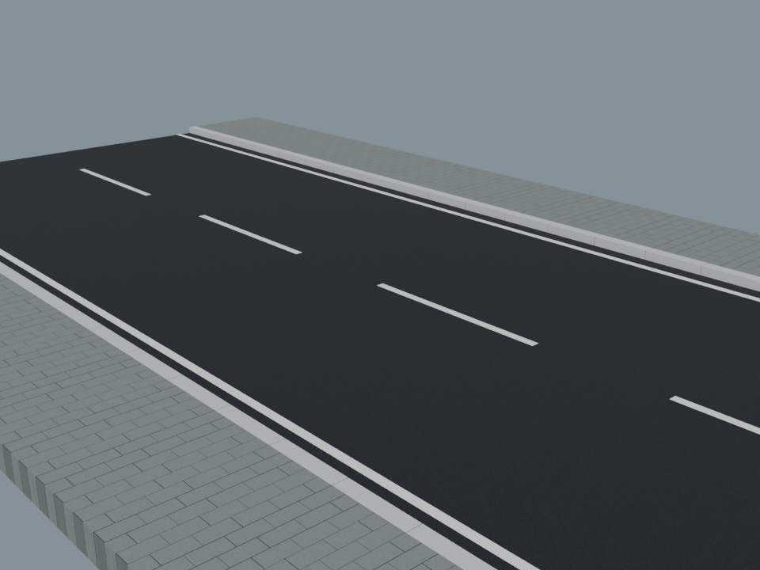
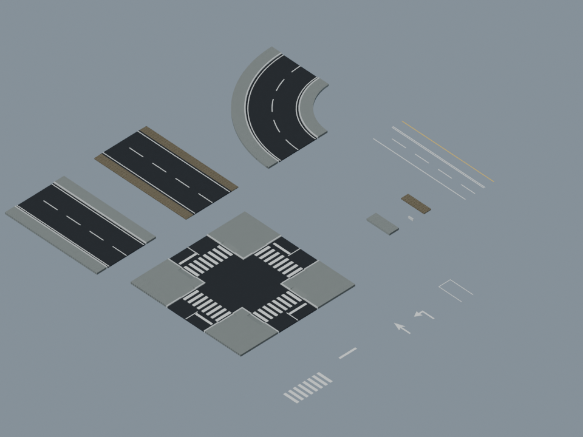
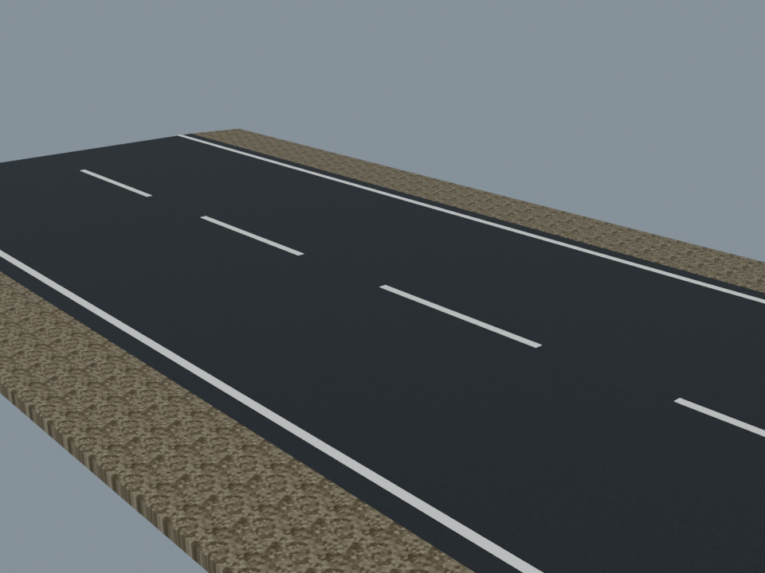
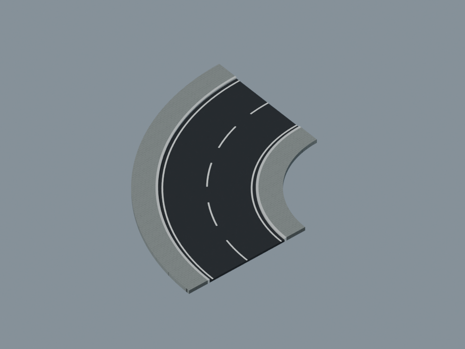
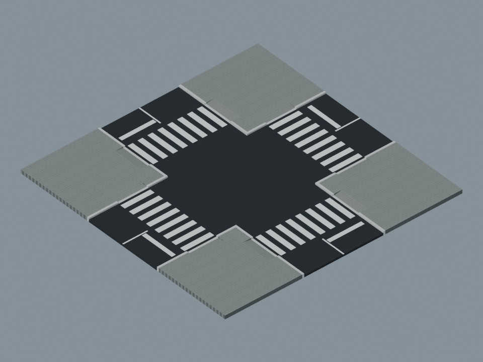

До — прежняя дорога района (Blender, архив)

Visual QA Demo
16 оригинальных модулей: городская и загородная дорога, поворот, перекрёсток, обочина, тротуар, бордюр и девять вариантов разметки. Blender → FBX / GLB → Unity. Масштаб — метры.
До — прежняя дорога района (Blender, архив)

После — новый городской модуль (Blender, v1)

Открыть 3D-просмотр всех 16 модулей →

Прямой участок 20 м · дорога 8 м · тротуар 2 м · бордюр 15 см · поворот R14
Гравийная обочина

Поворот 90°

Перекрёсток и пешеходные переходы
